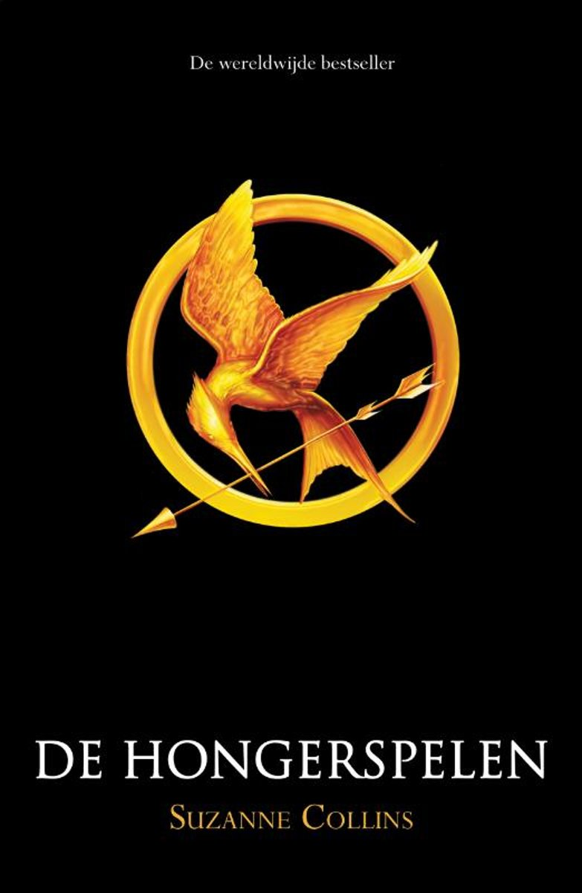

Hongerspelen
Informatie over het boek
- title boekverslag: hongerspelen
- auteur: Suzanne Collins
- jaar eerste druk: 2009
- jaar gelezen druk: 2011
- aantal pagina's: 495
- niveau lezen voor de lijst: 2
Samenvatting
Het verhaal speelt zich af in een land dat Panem heet. Het land bestond uit 13 districten en heeft een hoofdstad, het Capitool. Maar 73 jaar geleden brak er een opstand. Het Capitool heeft de opstand beëindigd door district 13 helemaal te vernietigen. Het Capitool wil door middel van een hongerspelen laten zien hoe machtig ze zijn. Maar ook als een soort straf voor de 12 districten. Uit ieder district doet er een jongen en een meisje mee van tussen de 12 en 18 jaar. De winnaar wordt beloond met een groot huis en veel geld. Iedereen gaat wedden wie er gaat winnen en zit dagelijks te kijken, ze mogen ook een kandidaat sponsoren dan krijgt de kandidaat iets wat diegene echt nodig heeft. Dit jaar is er weer een hongerspelen. Iedereen moet op het centrale plein komen en dan worden er lootjes getrokken. Eerst wordt er een meisje getrokken, Primrose Everdeen. Maar dan ineens bied haar oudere zus Katniss Everdeen zich vrijwillig aan. Waarschijnlijk kan ze het niet aanzien hoe haar 12 jarigezusje dood gaat. Het is heel lang geleden dat iemand zich aanbied om mee te doen. Dan zijn de jongens aan de beurt, Peeta Mellark. Katniss herkent de jongen. Want hij had haar eten gegeven toen ze bijna verhongerde. Samen spelen ze een goed toneelstuk tijdens de trainingsdagen, waardoor ze veel sponsors krijgen. De jongens en meisjes uit de districten 1,2 en 4 hebben de meeste kans om te winnen, want zij zijn beroeps (ze trainende tot ze 18 zijn en dan gaan ze vrijwillig). Dan begint de spelen. Katniss kreeg de opdracht weg te rennen van de basis met wapens, want daar kom je de beroeps tegen. Ze weet een rugzak te bemachtigen. In de rugzak zit een touw en een slaapzak. Ze slaapt in een boom waar ze zich aan vast heeft gebonden zodat ze niet valt. Na dagen overleven worden veel kinderen vermoord. Katniss sluit een verbond met Rue, het jongste meisje. Ze hebben afgesproken om de voedselvoorraad op te blazen. Maar Rue moet ze door middel van vuur weglokken. Het lukt om de voedselvoorraad op te blazen maar Rue wordt gevangen genomen en doodgestoken. Katniss schiet met haar pijl en boog (van een dode kandidaat afgepakt) de jongen dood die Rue heeft vermoord. Ze zingt Rue daarna in slaap tot ze dood is en legt bloemetjes om haar heen. Ze is er kapot van. Dezelfde dag hoort ze dat er niet een winnaar is maar twee als ze maar wel uit hetzelfde district komen. Katniss gaat daarna gelijk op zoek naar Peeta. Ze vindt hem gecamoufleerd op de grond met veel wonden van gevechten. Peeta gaat bijna dood aan zijn verwondingen. Maar dan wordt er meegedeeld dat iedereen iets krijgt wat ze nodig hebben. Katniss rent naar de basis en pakt het. Het zijn medicijnen voor Peeta. Er zijn nog maar een paar kandidaten in het spel en dan wordt de grote verrassing meegedeeld. Een mix van een beer en een wolf maar met de ogen van alle omgekomen kandidaten wordt op de laatste kandidaten afgestuurd. Bijna alle kandidaten worden opgegeten behalve Cato (de laatste beroeps). Katniss en Peeta vechten tegen Cato. Peeta wordt vastgebonden door Cato maar Katniss weet haar boog te bemachtigen en schiet hem in zijn hand waardoor Cato naar beneden valt en wordt dan opgegeten. Katniss verlost hem uit zijn lijden en schiet hem door zijn hoofd. Maar dan zeggen de spelmakers dat er maar een winnaar mag zijn. Katniss en Peeta besluiten dan tegelijk een paar giftige bessen te eten, zodat ze allebei dood gaan. Dat staan de spelmakers niet toe, dus laten ze hun allebei winnen. Maar hiermee staat het Capitool wel voor schut. De spelmakers besluiten wraak te nemen. Misschien kunnen Peeta en Katniss zich nog redden door te beweren dat ze stapelverliefd zijn en niet zonder elkaar kunnen leven.
- Wie is de hoofdpersoon van het boek? De hoofdpersoon is Katniss Everdeen.
- Beschrijf het uiterlijk en het karakter van de hoofdpersoon. Ze heeft bruin haar en is gemiddeld van lengte. Katniss is een zorgzame meid. Nadat haar vader is overleden zorgt zij voor haar zusje en haar moeder die nog steeds in shock is. Katniss is ook dapper, want zij zorgt voor het eten maar dat doet ze op een illegale manier door te jagen. Jagen is verboden als je dat toch doet krijg je zweepslagen.
- In welke historische tijd speelt het boek zich af? Het boek speelt zich af in de toekomst van Amerika.
- Vanuit welk perspectief wordt het verhaal verteld? Het verhaal wordt vanuit het ik perspectief verteld.
- Geef je mening over de personages van het boek. Katniss is de hoofdpersoon in het verhaal. Ik vind haar erg zorgzaam, omdat ze in het begin van het verhaal haar zusje beschermd. Katniss verzorgd Peeta en probeert hem in leven te houden. Katniss is ook heel dapper, omdat ze ondanks de gevaren zorgt voor eten. Peeta is ook een dappere jongen en een doorzetter, want hij probeert ook heel de spelen te overleven en hij is ook bereidt om te sterven als er maar een kandidaatmag overblijven. Hij heeft niet zo’n sterke persoonlijkheid als Katniss. Waarschijnlijk wordt hij meer gemotiveerd omdat hij verliefd op Katniss is.

Schrijver
Suzanne collins is een Amerikaanse scenarioschrijver en auteur. Suzanne Collins is vooral bekend door haar Hongerspelentrilogie. De Hongerspelentrilogie is ook verfilmd door Lions Gate entertainment. Als je meer informatie over de schrijver wilt vinden kun je naar: